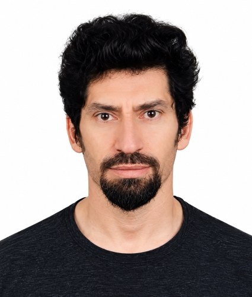

Biyomedikal mühendisi ve el becerisi güçlü, çok yönlü bir teknik insanım. Medikal cihaz servisi, elektrik–elektronik tamir, CNC talaşlı imalat, üretim yönetimi ve Ar-Ge'de fiili iş tecrübem var; boş zamanlarımda Android uygulamaları ve web siteleri geliştiriyorum. Evde, işyerinde ya da şantiyede kombiden elektrik tesisatına, scooterdan bilgisayara çoğu arızayı çözerim; yoksa sıfırdan üretirim. Teknik iş de olsa ayak işi de olsa sorumluluk alır, işi bitiririm. Yevmiyeli işten kadrolu pozisyona kadar tekliflere açığım.
github.com/hakanerbasss · Kod yazmayı kendi kendime öğrendim; projeleri baştan sona tek başıma geliştiriyorum.